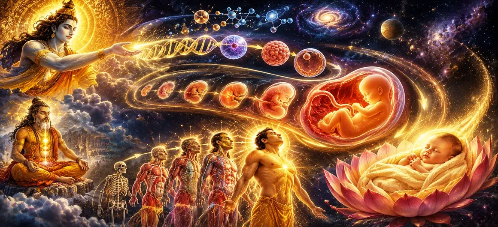

The Origin and Development of the Human Body
Transitioning from the macrocosmic theater of righteous warfare and public duty in Chapter 21, Chapter 22 of Uma Samhita turns its microscope toward the intimate, biological miracle of creation in The Origin and Development of the Human Body. Having examined how cosmic order is maintained externally in society, the scripture now reveals the intricate divine architecture of the individual human vessel—demonstrating through an exhaustive elevenfold framework how the physical body forms, grows, and houses the eternal soul under the supreme orchestration of Lord Shiva.
This chapter details the stages of embryonic formation, the fusion of elements within the womb, the gradual development of limbs and organs, and the profound spiritual significance of the human form as a living temple for higher consciousness.
Core Topics in This Text (11 Pillars)
- 01 The Divine Origin of Human Birth →
- 02 Conception and the Fusion of Elements in the Womb →
- 03 Gradual Growth and Formation of Tissues →
- 04 Development of Limbs, Senses, and Vital Organs →
- 05 The Infusion of Prana and the Soul's Entry →
- 06 The Environment of the Womb and Early Awakening →
- 07 The Human Body as a Sacred Temple (Devalaya) →
- 08 The Interplay of the Five Cosmic Elements →
- 09 Karmic Blueprint Embodied in Flesh and Bone →
- 10 Preparation for Arrival into the Outer World →
- 11 Transitioning from Embryonic Life to Infancy →
1. The Divine Origin of Human Birth
This opening section establishes that human birth is not a random biological accident, but a purposeful creation orchestrated by divine will. Uma Samhita explains how every soul enters a new physical cycle according to its accumulated karma under cosmic law.
The scripture emphasizes that obtaining a human body is a rare and precious opportunity granted to souls to work out their karmic evolution and achieve spiritual liberation.
2. Conception and the Fusion of Elements in the Womb
The text details the initial moment of conception, describing how parental energies and cosmic essences combine within the secure environment of the womb to spark a new life form.
Uma Samhita outlines how this delicate union initiates the formation of the embryo, laying the foundational cellular matrix for the future physical structure.
3. Gradual Growth and Formation of Tissues
As the weeks progress, the text explains the meticulous development of bodily tissues, blood, flesh, and bone. Each phase of growth occurs in precise sequence through the sustenance provided by the mother.
The scripture highlights this orderly transformation as proof of the supreme intelligence governing biological creation, reflecting the master design of Lord Shiva.
4. Development of Limbs, Senses, and Vital Organs
Uma Samhita describes the subsequent emergence of distinct limbs, sensory organs, and internal systems. Fingers, toes, eyes, ears, and the beating heart take shape within the dark warmth of the womb.
This intricate anatomical progression equips the physical vessel with all the necessary instruments required to interact with the material world upon birth.
5. The Infusion of Prana and the Soul's Entry
The text reveals the profound moment when prana (life force) animates the developing form, and the conscious soul fully integrates with the physical framework.
This vital infusion transforms a mere biological cluster of cells into a sentient being capable of feeling, breathing, and experiencing inner awareness.
6. The Environment of the Womb and Early Awakening
Uma Samhita describes the conditions within the womb, noting that even in confinement, the developing soul experiences a state of heightened inward reflection and memory of past births.
The text notes that facing the pressures of gestation, the soul often turns inward in prayer, seeking refuge and protection in the divine grace of Lord Shiva.
7. The Human Body as a Sacred Temple (Devalaya)
The scripture elevates the discussion by portraying the fully formed human body not merely as flesh and bone, but as a sacred temple (devalaya) housing the supreme divine presence within its core.
Recognizing the body as a temple inspires the individual to maintain purity of conduct, thought, and devotion throughout their earthly journey.
8. The Interplay of the Five Cosmic Elements
Uma Samhita explains how the human form is constituted by the harmonious interplay of the five great elements: earth, water, fire, air, and ether. Each element contributes specific physical properties to the body.
Understanding this elemental composition reminds the seeker of the temporary nature of the physical frame and the necessity of looking beyond outer appearances.
9. Karmic Blueprint Embodied in Flesh and Bone
The text details how the physical constitution, tendencies, and potential life path of the individual are shaped by the karmic blueprint carried forward from previous existence.
The human body acts as an instrument through which past karma is exhausted and new spiritual merit is generated under divine supervision.
10. Preparation for Arrival into the Outer World
As the gestation period nears its completion, the text describes the final preparations within the womb and the dramatic transition of birth into the outer world of light and air.
This momentous arrival marks the beginning of conscious worldly existence, where the newborn soul embarks on its journey of experience, duty, and spiritual seeking.
11. Transitioning from Embryonic Life to Infancy
Having explored the elevenfold philosophy of human embryology, anatomical creation, and the sacred temple of the body, Uma Samhita prepares to examine the earliest stages of mortal life, turning its focus in the next chapter to the condition of infancy.
This transition bridges the inner biological formation in the womb with the outer growth, vulnerability, and early experiences of a child navigating the material world.
Spiritual Insight
Chapter 22 teaches us through eleven foundational facets that the human body is a miraculous divine creation and a sacred temple. By recognizing the physical form as an instrument for spiritual evolution, we honor our life and dedicate our actions to the grace of Lord Shiva.
Frequently Asked Questions
① How does Uma Samhita describe the creation of the human body?
The text describes human embryology and anatomical development as a profound divine miracle, orchestrated by cosmic forces to house the eternal soul.
② What is the significance of the physical body in Puranic philosophy?
The physical body is regarded as a sacred temple (devalaya) through which the soul can pursue spiritual awakening, duty, and ultimate liberation.
③ How does this chapter transition from the previous chapter on warfare?
It moves from the outer protection of cosmic order in society down to the microscopic, biological creation of the individual human vessel that experiences life and duty.